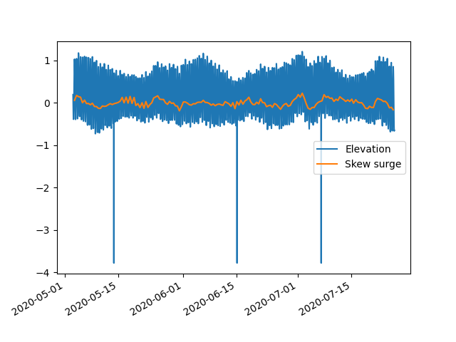

Note
Click here to download the full example code
Skew surge examples¶
Out:
solve: matrix prep ... solution ... diagnostics ... done.
prep/calcs ... done.
import pandas as pd
import toto
import matplotlib.pyplot as plt
from toto.inputs.nc import NCfile
import os
# read the file
filename='https://raw.githubusercontent.com/calypso-science/Toto/master/_tests/nc_file/elevation.nc'
os.system('wget %s '% filename)
df=NCfile('elevation.nc')._toDataFrame()
# Processing
df_new=df[0].TideAnalysis.skew_surge(mag='elev40',args={'latitude':-36})
# Plot the results
fig, ax = plt.subplots(1)
ax.plot(df[0].index,df[0]['elev40'],label='Elevation')
ax.plot(df_new.index,df_new['skew_surge'],label='Skew surge')
ax.legend()
fig.autofmt_xdate()
plt.show()
Total running time of the script: ( 0 minutes 0.962 seconds)